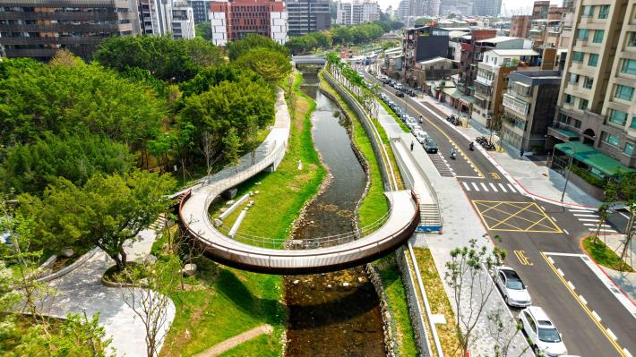
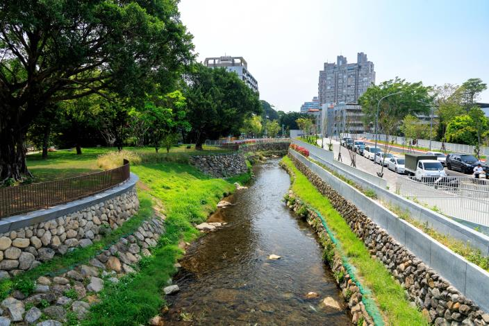
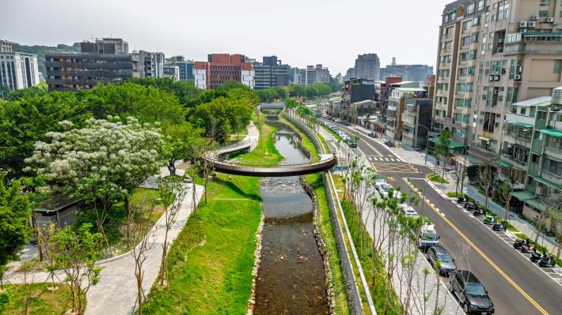

SINGAPORE / 比較案例
碧山—宏茂橋公園
PUB 與 NParks 合作，把混凝土渠道轉為自然化河川。可借鏡的是水道與公園一起規劃的方式；台北仍需依自己的集水區、土地與洪水條件評估。
官方案例與照片 ↗從河岸到巷弄，檢視沈伯洋提出的「台北水文化復興」政策：一份連結政策主張、真實地景與公民提問的知識指南。
沿著地圖，開始探索 ↗
本頁討論的是沈伯洋提出的「台北水文化復興」水政策。依 2026 年 10 月 26 日的上報報導，這項提案以淡水河、基隆河與市內溪圳為核心，提出親水、美感、潔淨、滯洪與生態五大治理方向。這些是候選人提出的政策主張，實際執行方式與成效仍需進一步檢驗。
這個網頁的目的，是讓市民有依據地理解、比較與追問這項政策。我們把新聞中的願景拆成具體做法，以地圖和實景照片連結相關地點，對照既有工程與官方資料，並整理預算、權責、維護與成效等待釐清問題，協助讀者判斷：政策新增了什麼、是否值得優先投入，以及未來如何驗收。
閱讀時需要分開三件事：候選人的提案、已存在的工程，以及仍需資料支持的效果。看見漂亮的河岸，不等於已證明減洪或降溫；那些效果需要量測與比較。
點選方向，對照報導中的做法，以及應如何驗收。
新加坡官方方案稱為 Active, Beautiful, Clean Waters（ABC）。本次報導另列滯洪 D 與生態 E；ABCDE 不宜直接稱為新加坡官方原有的五項架構。查閱 PUB →
台北的提及地點與國內外參考案例。點選地點可定位，並開啟外部地圖查找。


本頁三張實景照片均取自臺北市政府磺港溪工程新聞稿，照片權利依原來源；用於本頁案例說明，並非新政策完工成果。
PUB 與 NParks 合作，把混凝土渠道轉為自然化河川。可借鏡的是水道與公園一起規劃的方式；台北仍需依自己的集水區、土地與洪水條件評估。
官方案例與照片 ↗市府資料已列出河道、公園、步道與生態護岸等整合工作。評估新提案，應追問它與既有計畫的差異：新增什麼、加速什麼、經費與管理如何改變。
查看水利處分段工程紀錄 ↗提供的報導稱「今年 7 月完成」。市府新聞稿記載 2026 年 4 月 18 日舉辦竣工啟用活動；水利處 C 段頁另列 4 月 20 日步道工程竣工。可能涉及不同分段或認定，需確認報導所指範圍，不能直接合併為同一日期。
分段工程紀錄 ↗政策提出水空間、風廊與分散滯洪的方向。但單一場址的效果仍需以水理分析、微氣候量測與維護條件驗證。本頁沒有把任何降溫度數、減洪比例或效益金額當作已證實的承諾。
可要求公開：改造前後基準、分析方法、設計條件及長期監測資料。